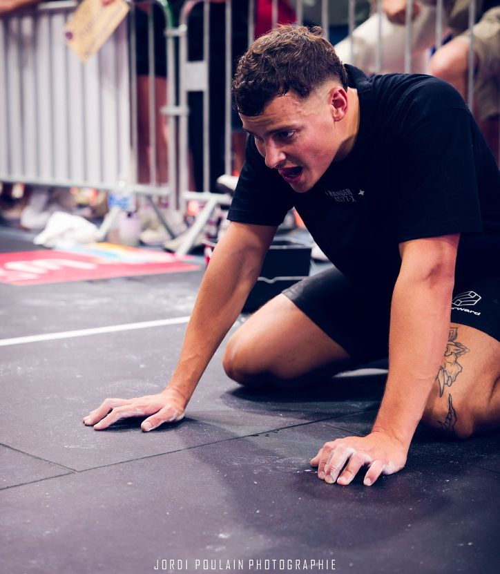
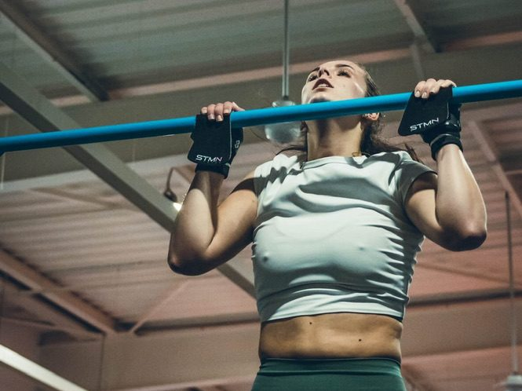

Conseils & méthode
LE BLOG
Préparation aux concours, CrossFit, force, prévention des blessures : les conseils de Clément pour t'entraîner avec une intention.

Barème Luc Léger : les paliers à atteindre au concours pompier et police
Quel palier pour avoir 10/20 au concours pompier ? Quel minimum pour la police ? Les barèmes Luc Léger SPP et gardien de la paix en tableaux, et comment gagner des paliers.
Lire l'article →
Overreaching et deload : pourquoi on se surcharge avant de récupérer
Une semaine volontairement surchargée, puis une semaine allégée : c'est le duo overreaching et deload. Pourquoi on fait ça, et comment ne pas gâcher ta semaine de récupération.
Lire l'article →
Cluster set : la méthode pour faire plus de volume lourd sans sacrifier la technique
Découper une série lourde en mini-séries de 2 reps avec 15 secondes de pause : c'est le principe du cluster set. Comment ça marche, et comment l'utiliser sans le dénaturer.
Lire l'article →
Gendarme mobile : Mathieu raconte ses 2 ans avec la programmation Go Forward
Mathieu, 32 ans, gendarme mobile, suit Go Forward depuis 2 ans. Avant, il stagnait et perdait sa motivation. Il raconte ce qui a changé avec une programmation structurée et un vrai suivi.
Lire l'article →
Concours police et gendarmerie : comment préparer les épreuves physiques
Parcours d'habileté motrice, Luc Léger, simulation de combat… Ce qui t'attend aux épreuves sportives des concours de gardien de la paix et de sous-officier de gendarmerie, et comment t'y préparer.
Lire l'article →
Concours sapeur-pompier professionnel : les épreuves sportives et comment s'y préparer
Natation, parcours professionnel adapté, Luc Léger : le détail des épreuves sportives du concours de sapeur-pompier professionnel, le barème et comment t'y préparer.
Lire l'article →
Comment débloquer ta première pull-up stricte
Tu bloques sur ta première traction stricte ? La progression, les exercices clés et les erreurs à éviter pour enfin passer le menton au-dessus de la barre.
Lire l'article →
Tu fais du CrossFit mais pas de renfo ? Voilà pourquoi c'est une erreur
Prévention des blessures, points faibles, progression sur les WODs : pourquoi le renfo est indispensable en CrossFit, et comment l'intégrer sans y passer des heures.
Lire l'article →
Programmation CrossFit en ligne : comment bien choisir la tienne
Structure, niveau, équilibre, coach, suivi : les critères pour choisir une programmation CrossFit en ligne qui te fait vraiment progresser, et les signaux d'alerte.
Lire l'article →